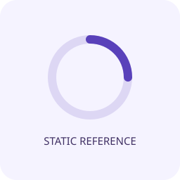

ShipLang Image Studio · xiaoqianShipLang Image Studio
发布者：xiaoqian。
图片创作技能使用当前聊天可用的生图工具。本插件的 MCP 仅返回一张固定的加载圈参考图，不调用图片模型、不启动生成任务、不报告进度。
只有请求占位素材时才使用此接口；生图工具不可用时会说明限制并提供提示词，不把占位图当成生成结果。

使用帮助与支持
可请求“给我加载圈参考图”，或使用图片创作技能编写提示词。实际出图能力由当前聊天平台提供。
支持邮箱：e@shiplang.com，主题注明 ShipLang Image Studio。请提供复现步骤，避免发送私人照片、密码或完整聊天记录。
隐私政策
图片、提示词和会话由当前聊天平台及用户另行授权的工具处理。本 MCP 不接收提示词、图片或任务参数，仅返回固定资源链接；应用代码不建立用户数据库，也不保存调用内容。
MCP 托管于 Cloudflare Workers，无需登录，不接收用户身份信息。托管平台可能处理请求元数据，用于安全和运行；数据处理以 Cloudflare 隐私政策 为准。本站和固定图片由 GitHub Pages 托管，访问请求的处理以 GitHub 隐私声明 为准。页面没有分析脚本或数据提交表单。
主动发送的支持邮件用于回复和排查问题。访问、更正或删除支持邮件中个人信息的请求，请发送到支持邮箱。不要在支持邮件中提供不必要的敏感内容。
服务条款
本服务由 xiaoqian 提供。请遵守适用的 OpenAI 使用条款 和 使用政策。宿主平台或另行授权工具的使用条件仍适用。
加载圈仅为静态示意素材，不是生图结果或真实进度。插件不保证某个生图模型可用或任何审核结果。对参考素材应具备适当使用权限；使用生成结果前请核对内容与权利。